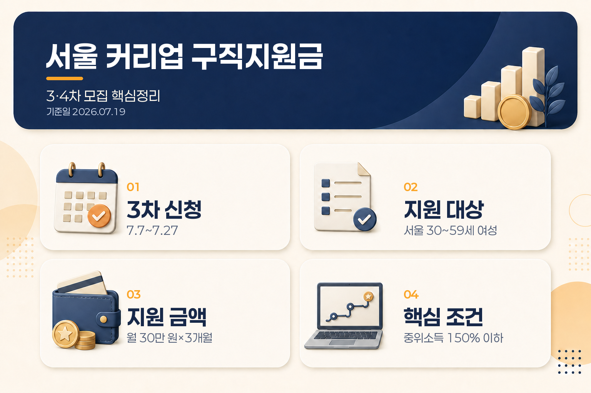

서울 커리업 구직지원금 3·4차 모집, 최대 90만 원 지원 조건·신청방법 총정리
서울시가 2026년 서울 커리업 구직지원금 3·4차 참여자를 모집하고 있습니다. 3차 신청은 7월 27일까지, 4차 신청은 7월 28일부터 8월 18일까지입니다.
기본 대상은 서울에 거주하는 만 30~59세 미취·창업 여성 중 혼인·임신·출산·육아를 이유로 경제활동을 중단한 사람입니다. 가구소득은 기준 중위소득 150% 이하여야 합니다.
지원금은 통장에 현금으로 입금되는 방식이 아니라 서울커리업포인트로 지급됩니다. 월 30만 원씩 3개월 동안 받을 수 있고, 참여 중 취·창업하면 요건에 따라 성공금이 더해지는 구조라 취·창업성공금을 포함해 최대 90만 원입니다.
기준일: 2026년 7월 19일
3차·4차 모집 일정 먼저 보기
| 구분 | 신청기간 | 예정 인원 | 선정 발표 |
|---|---|---|---|
| 3차 | 2026.07.07~07.27 | 1,000명 | 2026.08.06 |
| 4차 | 2026.07.28~08.18 | 500명 | 2026.08.31 |

3차는 7월 27일까지 온라인으로 신청할 수 있습니다. 다만 3차 공고문에는 접수 인원이 1,500명에 도달하면 접수기간 중이라도 조기 마감될 수 있다고 안내되어 있습니다. 4차는 서울시 안내 기사 기준 7월 28일부터 접수 예정이므로, 3차를 놓친 경우 4차 모집 공고를 다시 확인해야 합니다.
지원 내용과 최대 90만 원 계산 방식
| 항목 | 내용 |
|---|---|
| 구직지원금 | 월 30만 원 × 3개월 |
| 지급 방식 | 서울커리업포인트 |
| 취·창업성공금 | 참여 중 취·창업 후 3개월 유지 등 요건 충족 시 30만 원 |
| 총액 | 취·창업성공금 포함 최대 90만 원 |
| 추가 지원 | 여성인력개발기관 연계 상담·코칭·교육·일자리 정보 |
여기서 최대 90만 원은 기본 구직지원금 90만 원에 성공금 30만 원을 단순히 더한 금액이 아닙니다. 구직지원금 수급 중 취업이나 창업을 하면 다음 회차 구직지원금은 중단되고, 취·창업 후 3개월간 근로 또는 사업을 유지하면 30만 원 성공금이 지급됩니다. 따라서 참여 시점과 취·창업 시점에 따라 구직지원금과 성공금의 합계가 달라질 수 있으며, 공고문이 안내하는 최대액은 90만 원입니다.
또 지원금은 현금성 생활비가 아니라 구직활동에 쓰는 포인트입니다. 교육비, 교육기자재, 도서구입비, 건강검진비, 자격시험 응시료, 자녀 돌봄비 등에 사용할 수 있고 목적 외 사용은 환수될 수 있습니다.
신청자격은 무엇인가요?
다음 조건을 모두 충족해야 합니다.
- 2026년 7월 7일 공고일 기준 서울시 거주 여성
- 만 30~59세, 1966년 1월 1일~1996년 12월 31일 출생
- 혼인·임신·출산·육아를 이유로 경제활동을 중단한 미취·창업 여성
- 가구원 소득 합산액이 기준 중위소득 150% 이하
- 정부·지방자치단체 유사사업에 동시 참여하지 않는 경우
미취업은 공고일 기준 근로·노무를 제공하지 않는 상태, 미창업은 본인 명의 사업자등록증이 없는 상태를 뜻합니다. 주 15시간 미만 초단시간 근로자나 근로계약기간이 1개월 이하인 단기계약 근로자는 근로계약서를 제출하면 신청할 수 있습니다. 사업자등록이 있다면 실제 매출이 없더라도 원칙적으로 미창업으로 보지 않으며, 공고일 이전 폐업자는 신청할 수 있습니다.
가구원 수별 기준 중위소득 150%
2026년 3차 공고문 기준 월 소득 합산액은 다음과 같습니다.
| 가구원 수 | 월 소득 기준 |
|---|---|
| 1인 | 3,846,357원 |
| 2인 | 6,298,938원 |
| 3인 | 8,038,554원 |
| 4인 | 9,742,107원 |
| 5인 | 11,335,079원 |
| 6인 | 12,833,928원 |
| 7인 | 14,272,725원 |
| 8인 | 15,711,522원 |
| 9인 | 17,150,319원 |
| 10인 | 18,589,116원 |
필수 가구원은 본인·배우자·18세 미만 자녀입니다. 본인과 동일한 주민등록등본에 올라 있는 부모나 18세 이상 자녀는 희망할 때 가구원에 포함할 수 있습니다. 소득은 근로·사업·연금·이자·배당 등 신고된 정보를 행정정보 조회로 합산합니다.
중복 참여와 생애 1회 조건
실업급여, 국민취업지원제도, 국가기간·전략산업직종훈련, 서울시 청년수당 등 유사사업은 동시 참여가 제한됩니다. 정부·지방자치단체의 직접일자리사업도 함께 참여할 수 없습니다.
2023~2025년 서울우먼업 구직지원금 참여자는 다시 신청할 수 없고, 서울 커리업 구직지원금은 생애 1회 지원입니다. 차상위계층은 신청할 수 있지만 지원금이 공적이전소득으로 반영돼 급여액이나 수급자격이 바뀔 수 있으므로 주민센터에서 확인하는 것이 좋습니다.
신청방법과 필요한 서류
신청은 방문이나 이메일이 아닌 서울커리업 홈페이지 온라인 접수로 진행합니다.
- 서울커리업 홈페이지에 회원가입합니다.
- 구직지원금 메뉴에서 모집 중인 공고문을 확인합니다.
- 자가진단 후 온라인 신청서와 개인정보·행정정보 활용동의를 작성합니다.
- 서울시 여성인력개발기관 중 연계 희망기관 1곳을 선택합니다.
- 주민등록등본, 가족관계증명서 등 서류를 첨부합니다.
- 이력서를 작성하고 최종 제출 후 신청내역에서 제출완료 상태를 확인합니다.
필수 제출서류는 온라인 신청서, 개인정보 및 행정정보 활용동의서, 주민등록등본, 가족관계증명서 상세본입니다. 주 15시간 미만 근로자나 1개월 이하 단기계약 근로자는 주 근로시간과 근로기간이 적힌 근로계약서를 추가로 제출해야 합니다.
3차 모집은 모든 서류를 2026년 7월 7일 이후 발급본으로 준비해야 하며, 모바일 전자증명서의 열람용 서류는 인정되지 않습니다. PC에서 발급한 제출용 PDF를 준비하는 것이 안전합니다.
선정 후 포인트를 받으려면
3차 선정 결과는 8월 6일 예정이며, 서울커리업 홈페이지 마이페이지와 개별 문자로 안내됩니다. 신청 후 최대 45일 이내 선정 절차가 진행됩니다.
선정된 뒤에는 온라인 사전설문, 구직등록, 지정기관 방문상담을 먼저 진행해야 합니다. 이후 구직활동을 하고 결과보고서를 2회 제출해야 하며, AI 역량강화 교육도 1개 이상 수강해야 합니다. 필수 이행사항이나 증빙 제출이 빠지면 다음 회차 포인트 지급이 중지되거나 환수될 수 있습니다.
포인트는 본인 명의 신한 신용카드 또는 체크카드를 사용한 뒤 차감 신청하는 방식이 기본입니다. 신한카드가 없으면 사용에 제한이 있을 수 있고, 신한BC카드·신한직불 현금IC카드·가족카드·할부·해외결제는 포인트 사용이 불가능하다고 공고문에 안내되어 있습니다. 지급된 포인트의 사용기한은 2026년 11월 30일까지이며, 이후 미사용분은 소멸합니다.
신청 전 체크리스트
- 3차 신청 마감일인 7월 27일과 조기마감 가능성을 확인했나요?
- 30~59세 및 1966.1.1~1996.12.31 출생 조건에 해당하나요?
- 서울시 거주, 미취업·미창업, 경력보유·양육 관련 조건을 모두 확인했나요?
- 가구원 수와 기준 중위소득 150% 금액을 확인했나요?
- 실업급여·국민취업지원제도·청년수당 등 중복사업에 참여 중인가요?
- 연계 희망기관은 선정 후 변경할 수 없다는 점을 확인했나요?
- 7월 7일 이후 발급한 PC 제출용 서류를 준비했나요?
- 선정 후 상담·구직활동·AI 교육·결과보고서를 이행할 수 있나요?
자주 묻는 질문
90만 원을 받으면 성공금 30만 원이 추가되나요?
최대 90만 원을 기본 구직지원금 90만 원과 성공금 30만 원을 합친 120만 원으로 계산하지 않습니다. 참여 중 취·창업하면 이후 구직지원금이 중단되고, 취·창업 후 3개월 유지 등 요건을 충족하면 성공금이 지급되는 구조입니다.
3차를 놓치면 더 신청할 수 없나요?
서울시 안내 기사에는 4차 모집이 7월 28일부터 8월 18일까지 진행되는 일정으로 안내되어 있습니다. 3차와 4차는 차수별 공고와 접수기간을 따르므로, 3차를 놓친 경우 4차 공고가 열린 뒤 다시 확인하면 됩니다.
방문이나 이메일로 신청할 수 있나요?
구직지원금은 서울커리업 홈페이지에서 온라인으로 신청하는 방식입니다. 공식 FAQ에도 방문접수와 이메일 접수는 불가하다고 안내되어 있습니다.
서울에 사는 30~59세 여성이면 모두 신청할 수 있나요?
연령과 거주지만으로 결정되지 않습니다. 혼인·임신·출산·육아로 경제활동을 중단한 경력보유 여성인지, 미취·창업 상태인지, 가구소득이 중위소득 150% 이하인지, 중복사업에 참여 중이지 않은지까지 함께 심사합니다.
지원금은 현금으로 자유롭게 쓸 수 있나요?
서울커리업포인트로 지급되며 구직활동과 연결된 교육비·도서구입비·자격시험 응시료·돌봄비 등에 사용할 수 있습니다. 목적 외 사용이나 사용기한 이후 미사용분은 제한·소멸될 수 있습니다.
마무리
서울 커리업 구직지원금 3차는 7월 27일까지, 4차는 7월 28일부터 8월 18일까지 신청 일정이 잡혀 있습니다. 핵심은 다음 네 가지입니다.
- 서울 거주 30~59세 미취·창업 여성 중 경력보유·양육 관련 조건 확인
- 가구소득 기준 중위소득 150% 이하 확인
- 월 30만 원씩 포인트로 지급되며 취·창업성공금 포함 최대 90만 원이라는 계산 구조 확인
- 온라인 신청, 서류 발급일, 연계기관 선택, 선정 후 이행사항 확인
신청 전에는 3차 모집 공고문과 구직지원금 신청 페이지를 함께 확인하세요.
자료 기준일: 2026년 7월 19일. 이 글은 공개 공식 자료를 바탕으로 한 일반 정보 정리이며, 개인별 자격·가구원 산정·중복사업 여부는 심사 결과에 따라 달라질 수 있습니다. 실제 신청 전에는 최신 모집 공고와 서울커리업 안내를 확인하세요.
출처
이 글은 개인별 복지·세무·법률 판단을 대신하는 맞춤형 자문이 아닙니다.